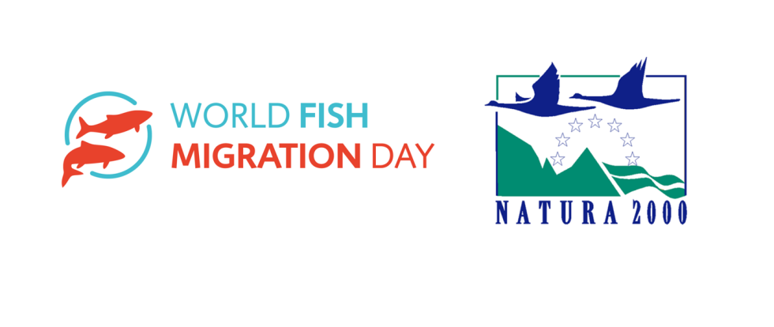

News ·
World Fish Migration Day e European Natura 2000 day

Anche quest’anno GRAIA celebrerà il World Fish Migration Day (WFMD), un evento globale-locale ideato per sensibilizzare la popolazione sull’importanza della libera percorribilità dei fiumi per le migrazioni dei pesci. A questa celebrazione, si affiancherà anche l’importante ricorrenza del “European Natura 2000 day” a cui siamo particolarmente legati grazie ai numerosi progetti che ci hanno visti protagonisti durante gli anni.
Parteciperemo attivamente a due eventi, il primo aperto a tutti, si terrà domenica 29 aprile 2018 presso l’incubatoio di Brusimpiano (VA), mentre il secondo interamente dedicato alle scolaresche, avrà luogo il 9 maggio 2018 presso l’incubatoio FIPSAS e il passaggio per pesci di Porto della Torre a Somma Lombardo (VA). Sarà inoltre l’occasione perfetta per fare conoscere i progetti del LIFE Programme attualmente in corso (Life conflupo e Life Ticino Biosource) a tutti i partecipanti.
Ai seguenti link è possibile trovare tutti i dettagli dei due eventi in programma: